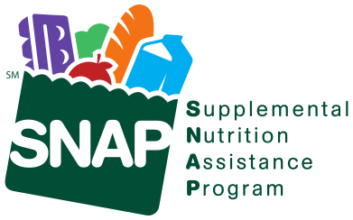

WELCOME!
The Florence Farmers Market takes place in the Florence Civic Center parking lot in Florence, Massachusetts
You'll find us there Wednesdays 2 pm to 6 pm May through October, rain or shine! The 2022 season starts May 4th.
See what's available every week on our Facebook page.


We are pleased to accept your SNAP/EBT, credit cards, and senior coupons at the Florence Farmer’s Market. Please visit Intervale Farm’s stand to swipe your card and receive tokens that may be used at any vendor stand.
HIP (Healthy Incentives Program) is also available at certain vendors. Find out if you qualify for the Supplemental Nutrition Assistance Program (a.k.a food stamps) and apply at www.gettingsnap.org.
HIP (Healthy Incentives Program) is also available at certain vendors. Find out if you qualify for the Supplemental Nutrition Assistance Program (a.k.a food stamps) and apply at www.gettingsnap.org.